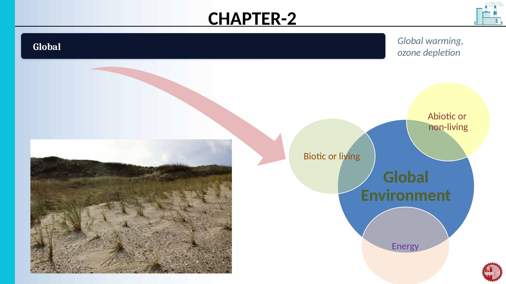
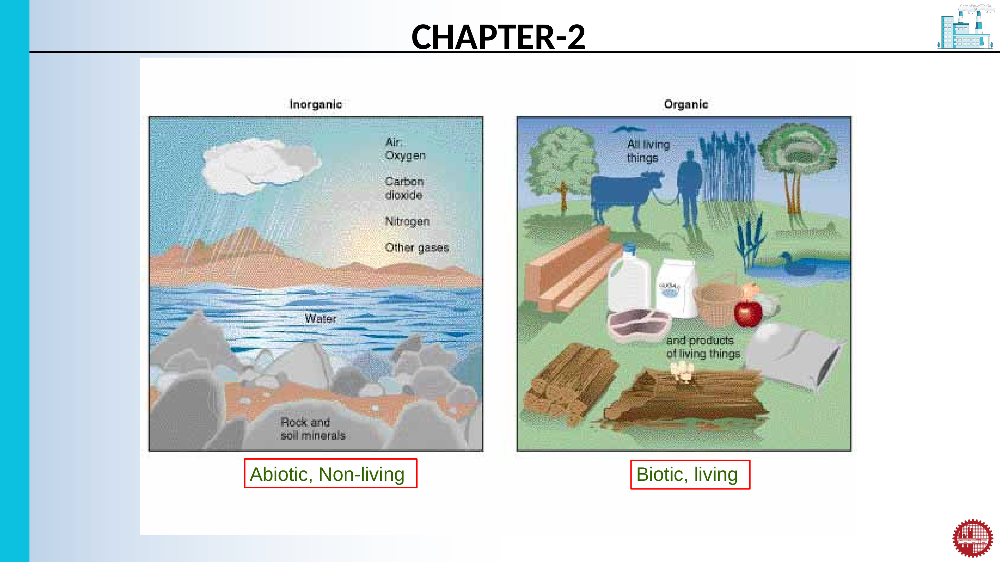
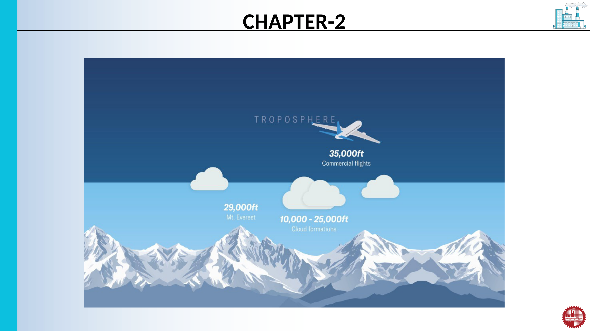

Chapter 2 covers the structure of Earth's environment at multiple scales, the five atmospheric layers, and the specific properties of each layer. The key exam question is why the troposphere is called the "region of mixing."
Environmental problems can be studied at five nested scales:

Five nested levels of environmental analysis — global → regional → local → plant → contained

Abiotic (non-living: air, water, soil) vs Biotic (living: flora, fauna, microbes) components
Earth's atmosphere is divided into five distinct layers based on temperature gradients:
| Layer | Altitude | Temperature Trend | Key Features |
|---|---|---|---|
| Troposphere | 0 – 14.5 km (avg) (0–8 km at poles, 0–16 km at equator) |
Decreases with altitude (~6.5°C/km) | Contains 75–80% of atmosphere mass; all weather occurs here; vigorous convective mixing |
| Stratosphere | 15 – 50 km | Increases with altitude (ozone absorbs UV) | Ozone layer (20–30 km); commercial aircraft fly here; stable, little mixing |
| Mesosphere | 50 – 85 km | Decreases with altitude | Coldest part of atmosphere (–90°C at top); meteors burn up here |
| Thermosphere | 85 – 350 km | Increases sharply (can reach 1500°C) | Very thin; aurora borealis occurs here; ISS orbits here |
| Exosphere | > 350 km | Near absolute zero | Transition to outer space; hydrogen & helium atoms; satellites orbit here |
The name troposphere comes from the Greek word tropos (τρόπος) meaning "turning" or "mixing." The layer is so named because of vigorous convective air currents that cause constant vertical mixing of air masses within the layer.

Five atmospheric layers with altitude ranges — Troposphere (0–14.5 km) through Exosphere (>350 km)
The ozone layer is a region in the stratosphere (approximately 20–30 km altitude) where ozone (O₃) is concentrated. It plays a vital role in shielding Earth's surface from harmful ultraviolet (UV) radiation.
This continuous cycle keeps ozone at a roughly constant concentration in the stratosphere — unless disrupted by catalysts like chlorine from CFCs.
The troposphere is called the "region of mixing" because of the vigorous convective air currents that occur within it. The word troposphere comes from the Greek tropos meaning "turning" or "mixing."
The mechanism: Solar radiation heats Earth's surface, causing the air above it to warm, expand, and rise (convection). As warm air rises, cooler and denser air descends to replace it, creating continuous convective circulation cells. This vigorous vertical mixing causes weather phenomena — clouds, rain, storms — which all occur within the troposphere. The temperature decreases with altitude in the troposphere at approximately 6.5°C per km (the environmental lapse rate), which is a direct consequence of this convective activity.
The mixing stops at the tropopause (the boundary at ~14.5 km), beyond which the stratosphere begins with temperature increasing rather than decreasing — a stable configuration that prevents further convection.
Environmental problems can be analyzed at five levels of increasing specificity: